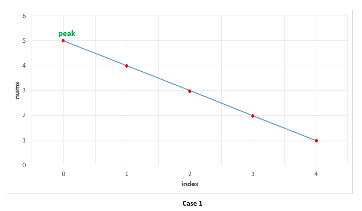

162. Find Peak Element
Problem description:
A peak element is an element that is greater than its neighbors.
Given an input array nums, where nums[i] ≠ nums[i+1], find a peak element and return its index.
The array may contain multiple peaks, in that case return the index to any one of the peaks is fine.
You may imagine that nums[-1] = nums[n] = -∞.1
2
3
4
5Example 1:
Input: nums = [1,2,3,1]
Output: 2
Explanation: 3 is a peak element and your function should return the index number 2.
1 | Example 2: |
Note:
Your solution should be in logarithmic complexity.
Solution:
- The question is asking for peaking element, if the sequence have multiple peak, anyone of them is fine.
- We can use
sequential findorbinary search
We can consider the following case:
Sequence is decreasing
If we use amidpointer to find, then the peak must be on the left side.
Sequence is increasing
The peak is on the right part.
Peak is in the middle

- sequential find
1
2
3
4
5
6
7
8
9
10
11
12
13class Solution {
public:
int findPeakElement(const vector<int> &num) {
for(int i = 1; i < num.size(); i ++)
{
if(num[i] < num[i-1])
{// <
return i-1;
}
}
return num.size()-1;
}
};
time complexity: O(n)
space complexity: O(1)
- binary search, recursive
1
2
3
4
5
6
7
8
9
10
11
12
13
14
15
16
17
18class Solution {
public:
int findPeakElement(vector<int>& nums) {
return helper(nums, 0, nums.size()-1);
}
int helper(vector<int>& nums, int left, int right){
if(left == right) return left;
else{
int mid = (left+right)/2;
if(nums[mid] > nums[mid+1])
return helper(nums, left, mid);
else
return helper(nums, mid+1, right);
}
}
};
time complexity: O(logn)
space complexity: O(logn). In recursion loop, the search space is reduced in half, so the depth tree is log_2(n)
- binary search, iterative
1
2
3
4
5
6
7
8
9
10
11
12
13
14
15class Solution {
public:
int findPeakElement(vector<int>& nums) {
int left = 0, right = nums.size()-1;
while(left < right){
int mid = (left+right)/2;
if(nums[mid]> nums[mid+1])
right = mid;
else
left = mid+1;
}
return left;
}
};
time complexity: O(logn)
space complexity: O(1)